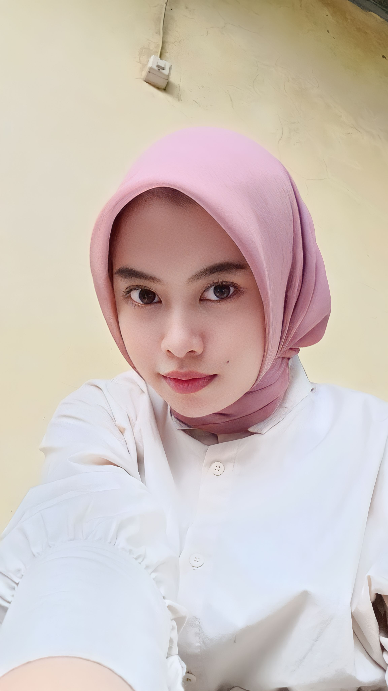
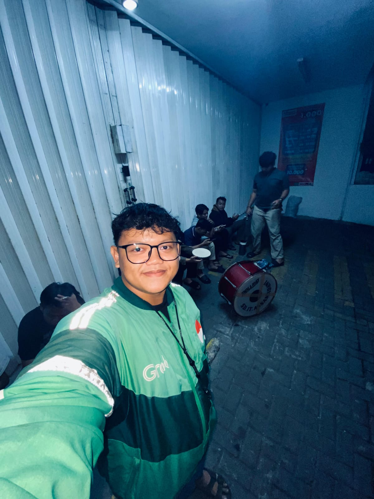
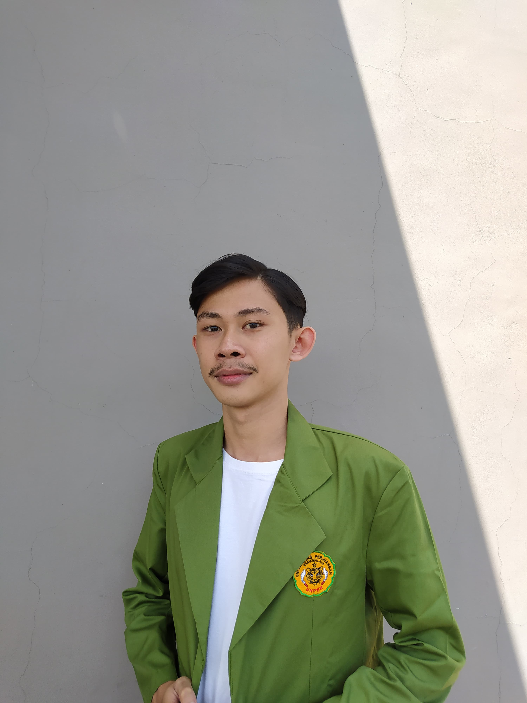

I asked people who already knew me, and their answer was like this:.

Anggi Pratiwi
Mahasiswa STMIK Mardira Indonesia
"I am Anggi Pratiwi, I know siti nurmarselawati or often called sella since studying at STMIK Mardira Indonesia until now we are still good friends, talking about sella's personality, sella is included in the Extrovert group and
can be said to be Ambitious in her lectures, for her own nature sella includes good people, likes to dress up, Brave but sometimes mageran, Likes snacks, Cool severe and beautiful."

Muhammad Zainal Alim
Mahasiswa STMIK Mardira Indonesia
"Introduce me Muhammad Zainal Alim and I know Siti Nurmarselawati or I often call Sella when in college she was active, liked to ask questions to lecturers, and had a character that likes to invite and like to help🤗."

Ananda Fasya Islami
Celerates Independent Study Friends
"hey. I am Ananda Fasya Islami, I know Sella from Stupen MSIB Celerates. I am getting familiar with sella Since often communicating, it turns out that the person is really extroverted. He is also warm to everyone who wants to
know. The first time I met offline, it turned out that Sella was really funny, Lucuuu Care kept a good listener too. The point is that you can get along with Sella.!"